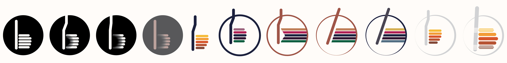

Graphic and web design for B-dent
website and visual branding for a new dentist practice
The client was just starting to do business on the web, and needed a new web page. Beeing a newly established dental practice, the clint also needed visual branding, and we ended up developing the entire design framwork in order to approach the basic task of designing the website.

Awareded design

Contest entry

Illustration
Starting the project
After the project was initialized, I have researched the practices offering similar services in the same region, in order to get insight in what the potential clients are used to, as a dentist office usually caters to a local client base. I have also researched similar practices world wide, in order to get an insight into what kind of services they offer and how these may be grouped. Since the client didn't have previous experience with website and structuring the information needed for it, they needed help with identification of common information and elements, and ways of structuring them.
The deliveries
After initial consultations with the client, a couple of versions of logo were made, as well as some styletiles, to serve as a basis for discussion with the client.
The style-tiles were used to communicate to the client colors and the general feel of the website. Fonts were agreed upon early on, and typography doesn't vary across the tiles.

The client wasn't really sure how to go about building a website, and the the style-tiles we used to distinguish what kind of look client wasn’t so fond of, and what kind of elements caught their attention to represent their practice. The first deliveries were defore style tiles, and they served as a basis for developing the style for the entire webiste.
The website was originally intended to be bilingual, but the client decided to only finalize the Serbian version.
Iconography
One of the important points for the client was to showcase the range of services they offer, and this is why the services both visually and content*vise take up a significant amount of space on the website. The different services were grouped into subcategories, and visuals were provided in order to make navigation to the desired content easier.
An appointment system
A mockup for an appointment scheduling app was made and pitched to the client during the process of developing the web site. The client refused the idea, as it would take a significant amount of time to develop, and in addition would demand a commitment to implementation in the scheduling system of the practice, which client wasn’t prepared to take. The prototype was designed with a previous version of logo and colors, while the elements are the same as in the existing mobile version of the website. The only addition is the “Make an appointment” button which would take the user to another area of the website.
You can take a look of the prototype.